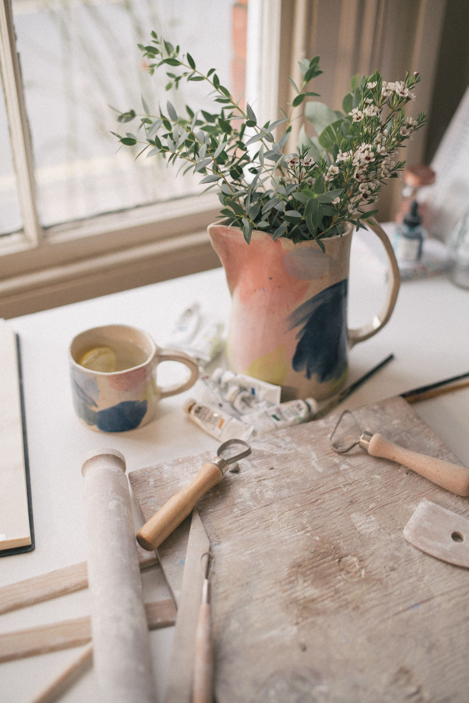

Stills for Rachel Sander's Ceramics


Explore some of our standout creative video productions and brand storytelling projects for artisans, designers, and creative businesses. Our work highlights the artistry, craftsmanship, and meaningful stories behind handmade products, ethical fashion, and artisan brands. Whether you're an artist, designer, fashion brand, or homeware company, our videography brings your creative vision to life, showcasing the skill and passion behind your work.
Yewo’s jewelry isn’t just a product, it’s a story told through craftsmanship and community impact. Our creative video production captures the journey behind each piece, blending traditional skills with innovative design.
Artisanal Craft: Watch as skilled artisans breathe life into each design with precision and care, telling a visual story through video.
Community Empowerment: Yewo provides training and employment for artisans, enriching local communities in Malawi. Our video highlights this meaningful impact.
Creative Collaboration: Every piece tells a story of co-creation and cultural heritage, merging modern design with traditional techniques, captured through our story-driven videography.
Baabuk’s footwear is an artisanal blend of traditional techniques and contemporary style. In our video, we explore their creative process from design to the careful selection of regenerative materials.
Craftsmanship with Tradition: Our video production showcases the hands-on artistry of Baabuk’s team using mulesing-free wool, emphasizing their commitment to sustainable practices.
Sustainable Craft: Highlighting the use of eco-friendly materials that support both the environment and the local economy, all captured with a creative lens.
Design Innovation: Circularity with creativity to design footwear that’s both stylish and eco-conscious, told through the visual language of our videos.
Whether you're an illustrator, graphic designer, or artisan, your brand deserves a platform where your craftsmanship and ideas can shine. Our video production services are designed to help you tell the story behind your art, connect with your audience, and bring your portfolio to life in an engaging way. From behind-the-scenes footage of your creative process to social media content, we specialize in creating high-quality, impactful videos that highlight the passion, skill, and artistry you put into every project.
At Soul Design, every jewelry piece is a work of creative collaboration. Our creative video productions delve into the journey behind their handcrafted designs, exploring the blend of African heritage and modern artistry.
Handmade Artistry: Focusing on the intricate craftsmanship that goes into each piece, created by skilled local artisans, our video storytelling brings this artistry to life.
Culture: Each design reflects the stories of travel, collaboration, and the cultures that inspire Soul Design’s collections.
Sustainable Craft: While creativity takes center stage, their ethical practices also speak to their commitment to ethical fashion highlighted through our video.
Coral & Hive’s handwoven rugs are more than just home decor, they’re works of art. Our creative video production captures the beauty of traditional weaving techniques while showcasing the modern creativity behind each design.
Artisan Craftsmanship: Skilled artisans handcraft each rug using natural fibers sourced from local communities. Our video highlights the beauty of this artisanal work.
Sustainable Materials: The use of mohair, karakul wool, and jute reflects Coral & Hive's commitment to eco-friendly and regenerative materials, all captured through our storytelling videos.
Craft: By preserving traditional weaving techniques, Coral & Hive honors craft while creating timeless pieces.


Collingwood-Norris fuses artistry with sustainability, creating timeless knitwear that reflects Flora's commitment to eco-conscious fashion. Our video captures the artistry and craft behind each handmade piece, highlighting the dedication to zero-waste practices and circular design.
Sustainable Craftsmanship: Showcasing the handmade process using eco-friendly materials.
Timeless Design: Featuring knitwear that transcends seasonal trends, built to last.
Commitment to Zero Waste: Illustrating Flora's focus on biodegradable fibers and recyclable packaging.


A great video goes beyond showcasing your products, it brings your creative process, artisan craftsmanship, and unique story to life. Here’s how creative video production can elevate your brand:
Engage and Inspire: Video captivates your audience and allows them to experience the artistry and craftsmanship behind your brand.
Stand Out with Creativity: Showcasing your creative journey sets you apart and leaves a lasting
Tell Your Brand’s Story: Videos let your audience see the passion, skill, and dedication behind your work, helping to humanize your brand and connect with your audience.
Foster Connection and Trust: People connect with stories. Seeing the faces and hands behind your brand builds trust and loyalty, an impact we achieve through storytelling videos.
Drive Impact and Sales: A powerful video can drive customer engagement and encourage purchases by showcasing your unique value through creative video production.
Let’s Create Something Beautiful Together
Ready to bring your creative vision to life? Whether you’re a designer, an artist, or a creative brand, we’d love to help you tell your story through creative video production. Contact us today to discuss how we can work together to create something extraordinary!


Brand Video Production
Social Media Video Production
Nature Video Production
Creative Video Productions
Charity Video Production
Drone Videographer
Event Video Production
Product Video Production
Travel Video Production
Learn Video Making
Video Storytelling
Video Making Tips
Video Marketing & Social Media Strategies
Nature Stories
Behind the Scenes
Client Stories
Locations & Travel
Location
Based in Portugal and South Africa, offering video production services worldwide.
Email: katy@munjiri.com
Get updates and free resources.